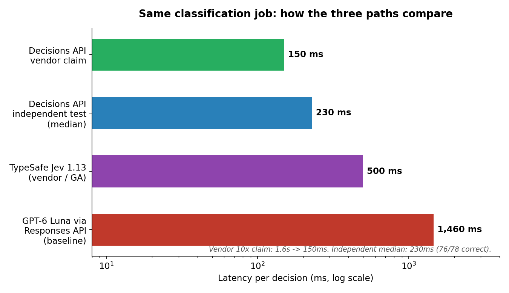
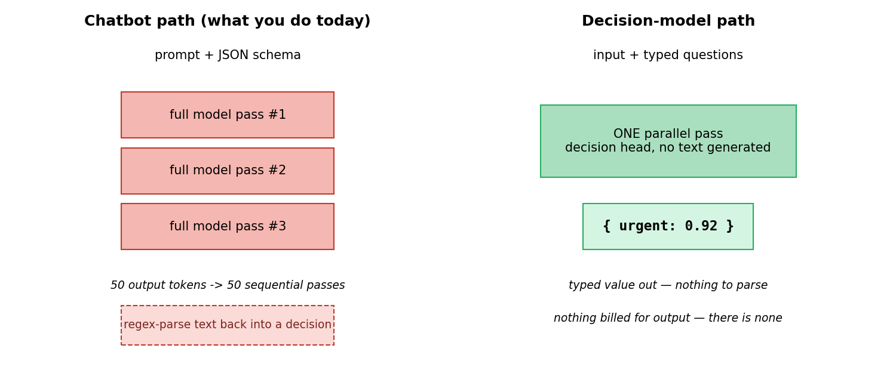
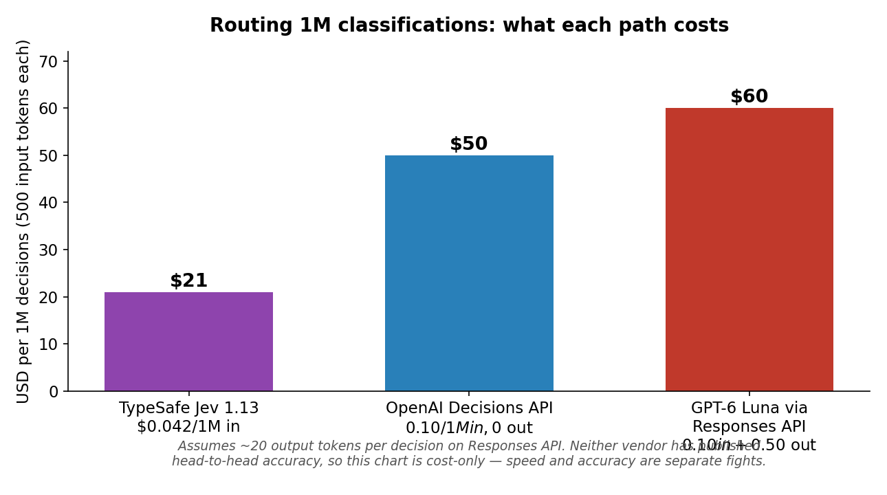
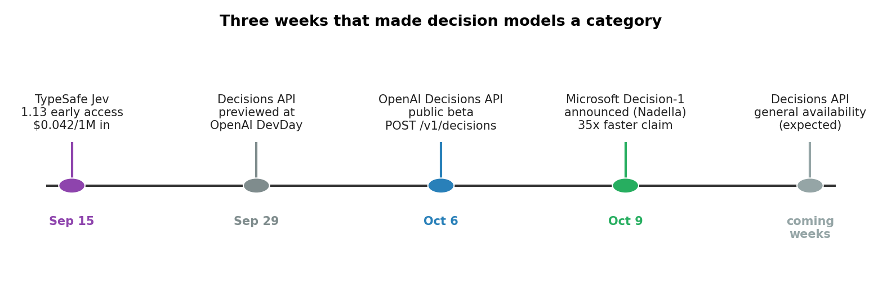

On September 15, TypeSafe AI came out of stealth with Jev — a model that never generates a single token. It only returns typed decisions: a probability, a choice, a score. Three weeks later, the two biggest sellers of chatbot sentences walked the same path. On October 6, OpenAI shipped the Decisions API in public beta. On October 9, Satya Nadella announced Microsoft Decision-1, claiming it makes decisions 35 times faster than GPT-6 Sol. A startup said software doesn't want sentences — it wants values it can branch on. This week, the industry's two biggest players agreed.
(Sequel to the September 24 post, "The Model That Doesn't Talk," which covered Jev's launch and its calibration-first training.)
ELI5: the stamp, now sold by the big hospitals
A chatbot is a brilliant doctor who answers every yes/no question with a ten-page essay. You read the essay, find the answer, and copy it into your spreadsheet.
A decision model is the triage nurse who stamps your form: "urgent: 92%." The stamp is the whole product.
What's new this week is who sells stamps now. When a startup does it, it's a thesis. When OpenAI builds POST /v1/decisions and Microsoft post-trains a whole model around it, it's a category — and every workflow you've been running through "prompt the LLM, parse the JSON with a regex" is now legacy code.

How it works: one pass, no talking
An LLM is autoregressive: token, full model pass, token, full model pass. A 50-token JSON answer is 50 sequential passes through the weights — and then you regex-parse the text back into the decision you wanted in the first place.
A decision model replaces the language-model head with a decision head and evaluates everything in one parallel pass. No tokens generated, no tokens billed, nothing to parse. The outputs are typed up front:
- Predicate: a probability from 0 to 1 that a condition holds.
- Choice: one of the fixed options you supplied, with a probability per option.
- Score: a weighted position across ordered severity levels.
OpenAI's version takes text (or base64-only images — hosted URLs are refused) plus a list of questions, and returns the answers "about 10x faster than the Responses API," at $0.10 per million input tokens and $0 for output. Independent developers measured a 230ms median with 76 of 78 answers correct on a structured task replay. Microsoft's Decision-1 is post-trained on Alibaba's Qwen3.5-9B for fast, single-pass decision scoring — yes/no questions, multiple-choice, ratings, and grading AI-generated responses against predefined criteria — and Microsoft says it topped 36 benchmarks across accuracy and speed. It's already being tested across Microsoft, including incident response.

The state of the art: three players, one category
| TypeSafe Jev 1.13 | OpenAI Decisions API | Microsoft Decision-1 | |
|---|---|---|---|
| Status | GA (via Vercel AI Gateway) | Public beta (Oct 6), GA "coming weeks" | Announced Oct 9 |
| Input | Text + structured state | Text + images (inline base64) | Text + images |
| Latency | 70–500ms | ~150ms claimed / 230ms independent median | 35x faster than GPT-6 Sol (claimed) |
| Price | $0.042/1M input tokens | $0.10/1M input, $0 output | Not disclosed |
| Max options | 255 per question | Not disclosed | n/a |
On cost for the canonical workload — 1M classifications of 500 tokens each — Jev lands around $21, the Decisions API at $50, and GPT-6 Luna through the Responses API near $60 ($50 in, ~$10 for 20 output tokens per decision). The cost win is mechanical: no output tokens exist to bill.

Fine print, because vendor numbers are vendor numbers
- Neither OpenAI nor Microsoft has published head-to-head accuracy against the same model called through the Responses API. Speed is claimed with numbers; accuracy isn't. The cost chart above is cost-only — treat speed and accuracy as separate fights.
- Chained decisions are separate requests. OpenAI's docs say a decision that depends on an earlier answer needs a second request. Five dependent steps at a 230ms median is 1.15 seconds — design decision graphs shallow.
- The score type can land between levels. OpenAI's own worked example turns probabilities of 0.1, 0.7, and 0.2 across three severity levels into a score of 1.1 — a number that corresponds to no level. Know your type system before you threshold it.
- At launch,
/v1/decisionswasn't in Luna's own docs. The model's 18-row endpoint support table listed Chat Completions, Responses, and Batch — but not the new endpoint. Beta roughness, but check before you build.

The moat question
Hacker News split predictably. Half argued OpenAI validated the category — and validation is worth more to Jev than two weeks of exclusivity. The other half argued the moat never existed: if OpenAI can ship this two weeks after a startup, so can anyone. Both camps are right, which is the uncomfortable truth about developer tooling.
The honest scorecard: Jev keeps general availability, the lowest price ($21 vs $50 per million decisions), and calibration-first training — the confidence number as the product. OpenAI keeps images, the SDK you already have, and measured-faster head-to-heads (230ms vs 500ms median; 76/78 vs 73/78 correct). Microsoft brings the self-hostable angle: a decision model post-trained on an open-weight base, not a closed API.
Takeaways
- The chatbot-for-classification is legacy. If your pipeline ends in a regex, you're paying for sentences you throw away.
- The latency and cost wins are mechanical, not marketing. No tokens out means nothing to bill and nothing to parse.
- Calibration and chaining are still on you. Thresholds need labeled history — build that set before you automate. Keep decision graphs shallow.
- Watch the GA pricing. OpenAI's beta price is input-only and unconfirmed for general availability. Jev's edge today is price and calibration; OpenAI's is speed and distribution; Microsoft's is open-weight self-hosting.
Sources: OpenAI Decisions API pricing/comparison · MarkTechPost beta coverage · 150ms classification benchmark · Microsoft Decision-1 announcement